Rear Suspension
Anti-roll barTo remove
1. Raise the car.
2. Remove the rear wheels.
3. Cars with tire pressure monitoring: Remove the rear RH wing liner.
4. Cars with tire pressure monitoring: Unplug the connector of the signal detector, release the wheel housing clips and fold down the wiring harness.
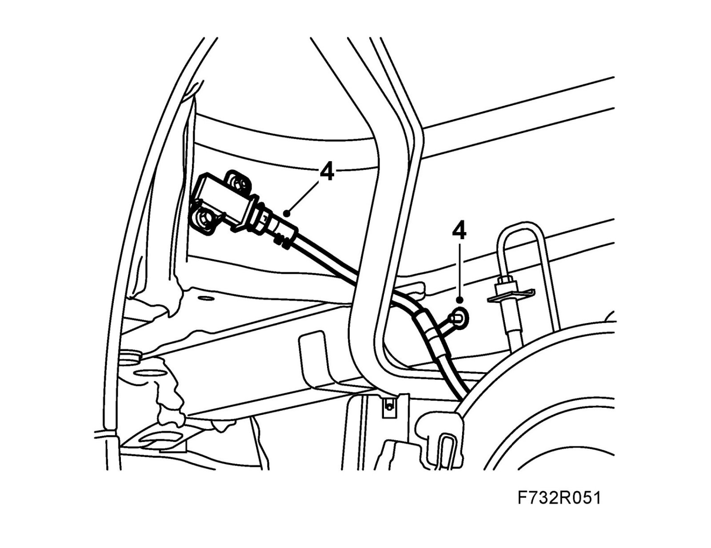
5. CV: Remove the chassis reinforcement from the rear subframe.
Cut the front pipe between the flexihose and the silencer, 87 mm above the silencer. Use 83 95 667 Pipe cutter/exhaust system.
See also Front silencer.
Lift down the rear section of the exhaust system.
6. Remove the retaining spring from the brake caliper.
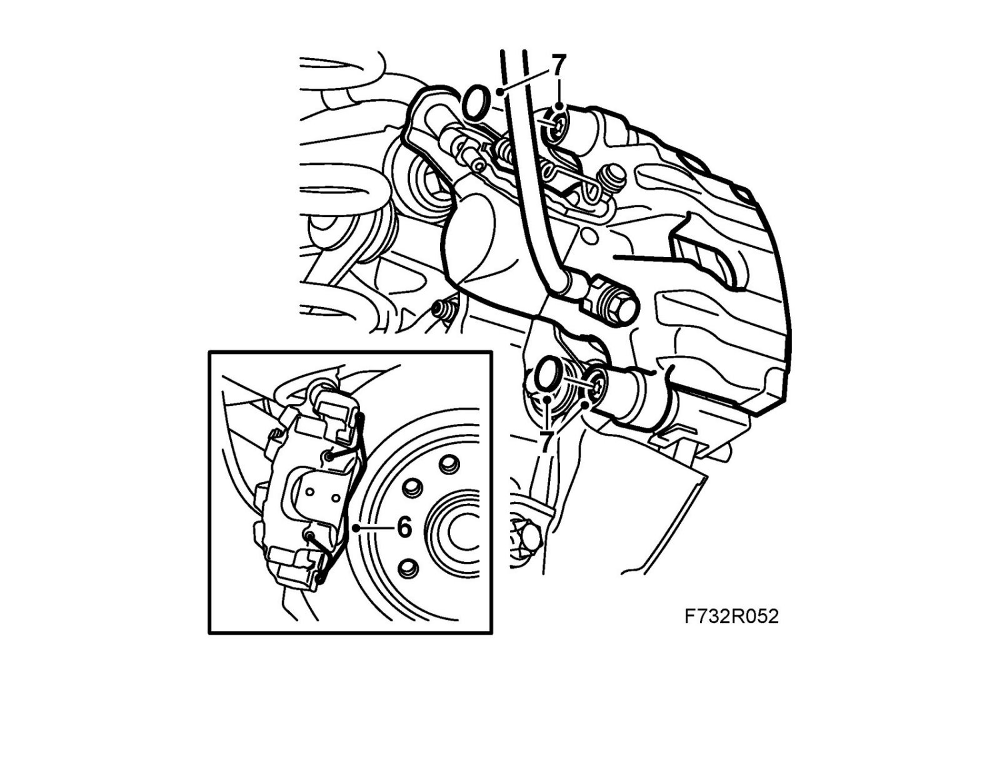
7. Remove the protective covers.
Remove the hydraulic body and suspend it with a hook in the brake pipe holder.
Note
Make sure the brake pipe is not damaged.
Remove the outer brake pad.
8. Remove the hydraulic body on the other side according to steps 6-7.
9. Relieve the weight on the shock absorbers on both sides.
Clean the bolts holding the shock absorbers to the steering swivel member and lubricate the threads. Remove the bolts.
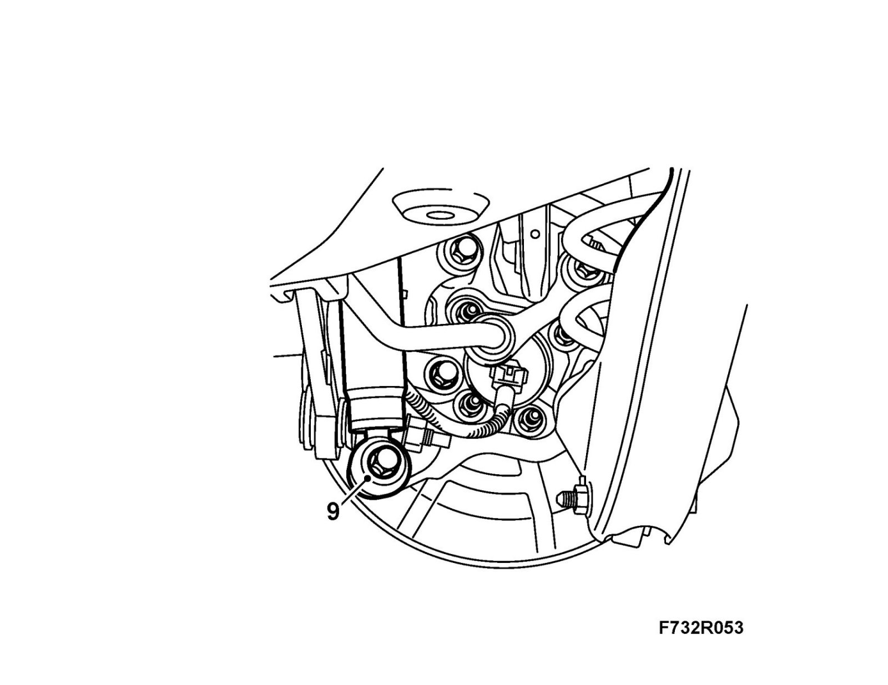
10. Open the protective case and unplug the connection for the electrical circuit.
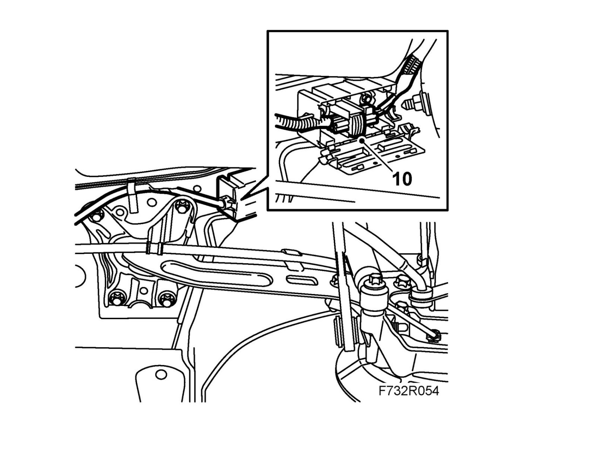
11. Place a pillar jack under the center of the subframe.
12. Remove the subframe bolts from the body
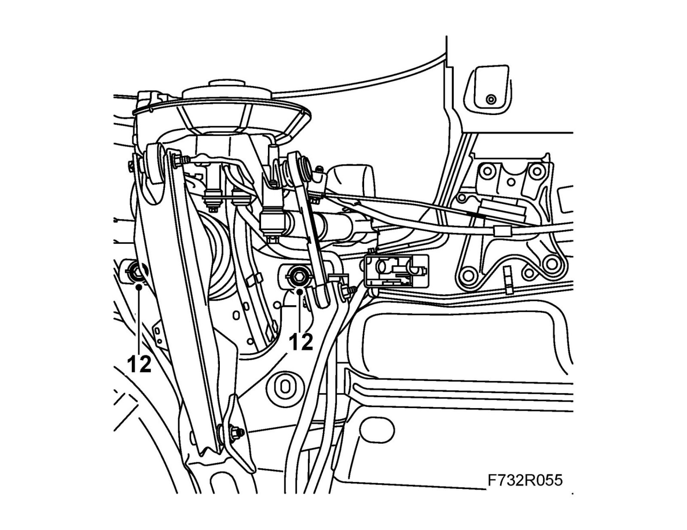
13. Lower the subframe and lift the springs away.
Note
Do not lower the lower edge of the subframe more than 200 mm.
14. Remove the anti-roll bar from the steering swivel members.
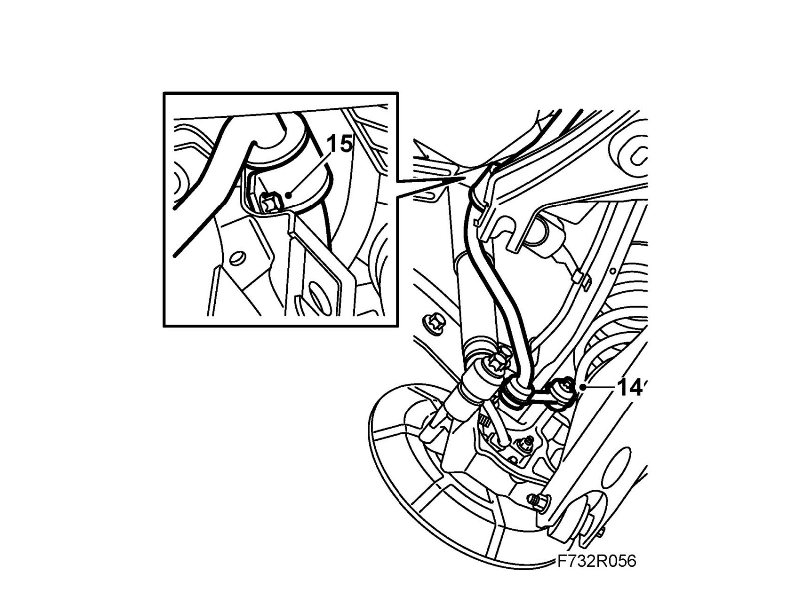
15. Remove the anti-roll bar mountings from the subframe.
16. Lift out the anti-roll bar towards the rear between the subframe and the body.
To fit
1. Lift the anti-roll bar into place between the subframe and the body.
2. Fit the bushes and caps on the subframe.
Fit the anti-roll bar to the subframe.
Tightening torque bolt 8 8 (flange diameter 15.2 mm): 18 Nm (13 lbf ft) and use Thread locking adhesive, Loctite 242
Tightening torque bolt 10 9 (flange diameter 16.7 mm): 31 Nm (23 lbf ft)
3. Fit the anti-roll bar link to the steering swivel member on both sides.
Tightening torque 53 Nm (39 lbf ft)
4. Fit the spring supports on the springs. Place the springs on the lower suspension arms.
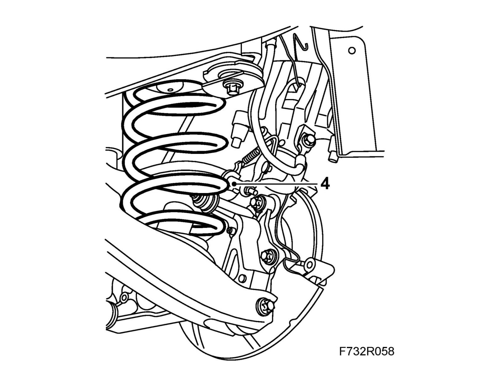
5. Raise the subframe with a pillar jack, pushing it forward slightly.
Note
Make sure the shock absorbers are positioned in front of the anti-roll bar.
6. Fit the subframe to the body.
Tightening torque 75 Nm +135° (55 lbf ft +1350°)
7. Remove the jack.
8. Connect the wiring harness, plug in the connector and close the protective case.
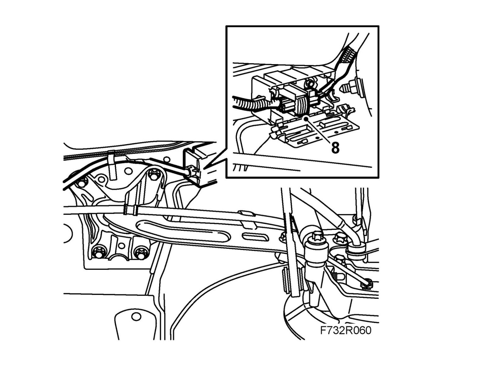
9. Lift the steering swivel members and fit the shock absorbers on both sides.
Tightening torque 150 Nm (110 lbf ft)
Note
For correct fitting, see fitting Shock absorber.
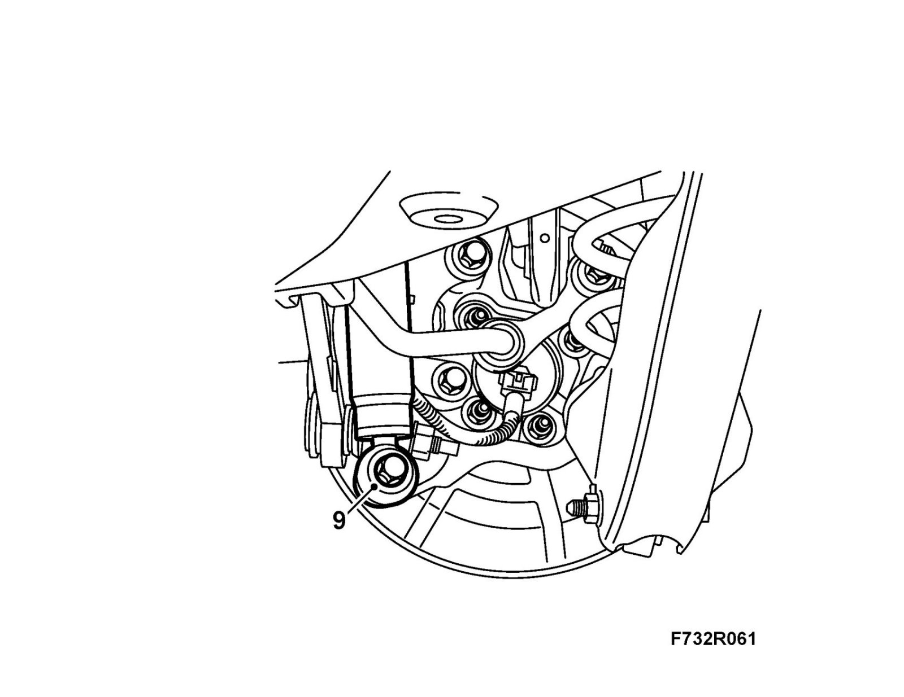
10. Remove the inner brake pad.
Screw in the brake piston with 89 96 969 Resetting tool and 89 96 977 Adapter.
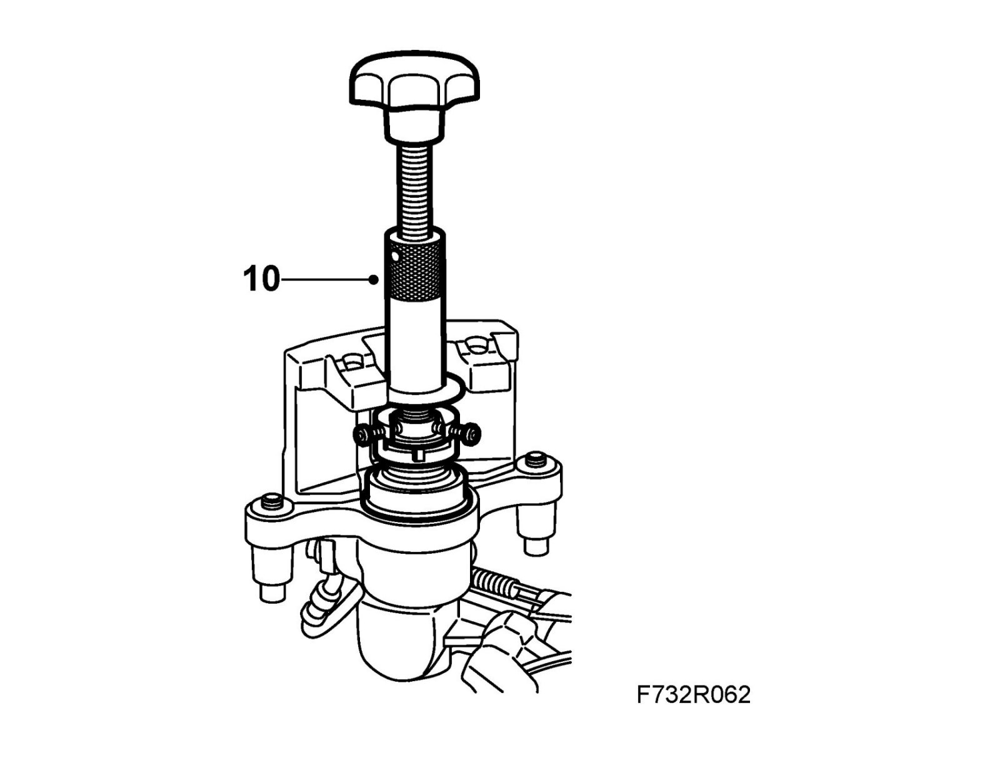
11. Fit the brake pads.
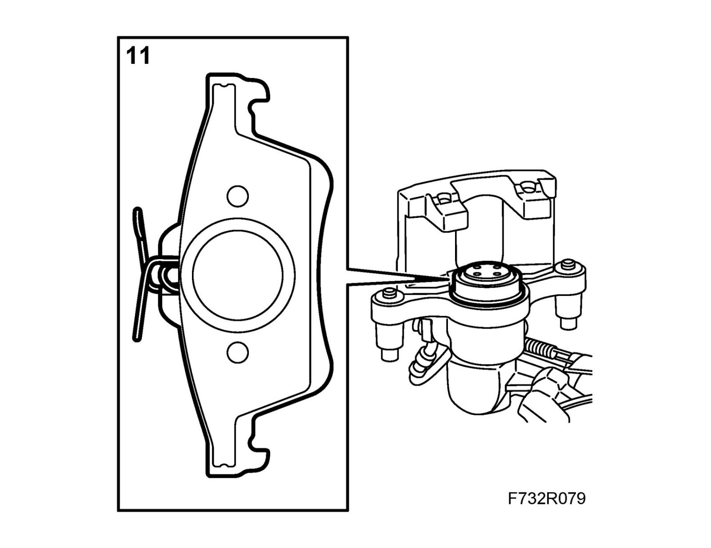
12. Fit the hydraulic body.
Tightening torque 28 Nm (21 lbf ft)
Fit the protective covers.
Fit the retaining spring to the hydraulic body.
13. Repeat steps 10-12 for the other side.
14. Clean the exhaust pipe joints and fittings. Fit the pipes with joint clamps. See EPC and Fitting, front silencer.
Tightening torque 40 Nm (30 lbf ft)
15. CV: Fit the chassis reinforcement to the rear subframe.
16. Cars with tire pressure monitoring: Fit the wiring harness and plug in the connector for the signal detector. Fit the wing liner.
17. Fit the rear wheels.
18. Lower the car to the floor.
19. Depress the brake pedal several times to press out the self adjustment of the brake pistons and the parking brake.